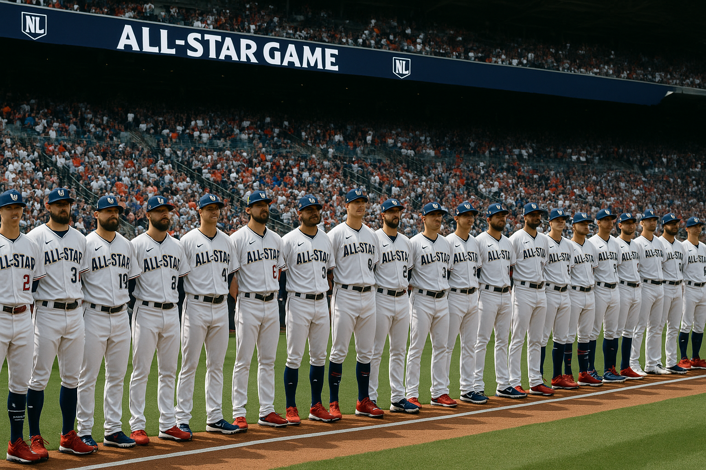
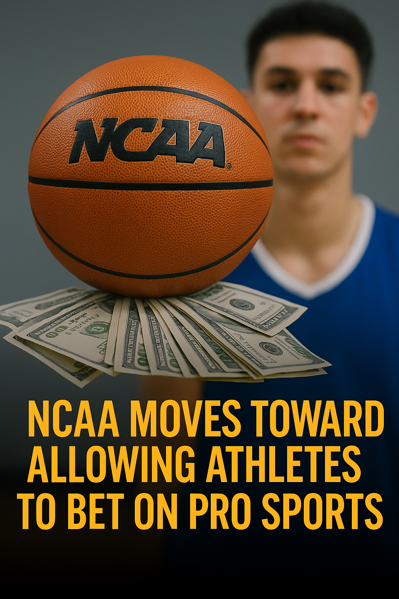

üî• BetLegend Newsroom: Breaking Sports Betting Headlines
College Sports Taking Steps to Tackle Betting Pressure
2:25 AM, July 23, 2025
There’s a quiet shift happening in college sports right now, and it’s long overdue. As legal sports betting has exploded across the country, college athletes have found themselves on the front lines of a very real and often toxic gambling culture. Now, the Atlantic Coast Conference is stepping in with a rule change that might finally help draw the line.
Starting this fall, ACC teams will be required to report player availability both the day before and two hours before every game. That means fans, bettors, and media will get clarity on who is playing and who isn’t. It's an attempt to reduce speculation, and more importantly, to stop the harassment of student-athletes who are often bombarded with questions and even threats related to betting lines.
It might sound like a small change, but this is a big deal. Until now, most college programs have been extremely secretive about injuries and roster changes. Unlike the NFL or NBA, there’s been no standardized protocol, which creates a gray area where rumors spread and betting markets get distorted. It also puts athletes in the awkward position of being pressured for insider information by people with money on the line.
Other conferences like the SEC and Big Ten have already moved in this direction, so the ACC’s decision follows a growing trend. But the timing is crucial. We’ve already seen a few ugly stories where players were targeted online after a bad game, and some bettors took things way too far. This policy is at least a start to protect athletes while still embracing the reality that college sports and betting are now deeply intertwined.
It’s not a silver bullet, and it doesn’t fix everything, but having a clear injury report system helps level the playing field. Fans stay informed, sportsbooks can set fairer lines, and student-athletes don’t have to live in fear of DMs every time they tweak an ankle. College sports are evolving, and this is one of those rare changes that seems to make sense for everyone involved.
• Fanatics Sportsbook Goes National — July 21, 2025
Posted: 10:13 PM — July 21, 2025
Fanatics has finally made its big move. The sportswear giant is no longer just selling jerseys and autographed balls. As of this week, its sportsbook is officially live in more than 20 states and expanding fast. This is not just a soft rollout, it is a full-on blitz. DraftKings and FanDuel now have a legitimate third wheel in the relationship.
The app itself is clean, fast, and dangerously slick. They have built it around the idea of rewarding you for losing money, which honestly feels pretty on-brand for sports betting. Bettors earn FanCash for every wager and can trade that in for hats, hoodies, or more betting funds. Is it loyalty or is it Stockholm Syndrome? Who cares, it works.
Fanatics also took a shortcut to national status by absorbing PointsBet's U.S. operations. That gave them the tech and licensing backbone to spread quickly. In a world where speed matters, they went from regional to national before most bettors even noticed.
Whether Fanatics can actually eat into DraftKings and FanDuel’s market share is still up in the air. But with NFL season right around the corner and promos heating up, one thing’s for sure — they’re going to throw money at this. Expect crazy boosts, giant signup offers, and probably a 500-dollar rebate just for betting on the Panthers to go 4-13.
Inside the New MLB Umpire Scorecard Revolution
Posted: 6:18 PM – June 20, 2025
There’s a new MVP in the world of MLB betting, and he’s not throwing 98 with movement or launching 450-foot bombs. He’s standing behind home plate, squinting into the abyss, and calling balls and strikes with all the grace of a hungover barista working a double. Welcome to the umpire scorecard era—where bettors are finally saying what players have whispered for years: “This guy’s strike zone is a damn mystery.”
Thanks to the rise of public tracking sites like UmpScorecards and a growing army of data nerds on Twitter, we now have daily report cards for every plate umpire in Major League Baseball. Missed calls? Graded. Inconsistent zones? Charted. Bias toward one team? Exposed like a bad Tinder date. The data’s out there, and sharp bettors are using it to tilt the board in their favor.
Here’s the deal: totals bettors especially have taken notice. A game might be lined at 8.5, but if the ump behind the dish is known for a postage-stamp zone and a hatred for borderline strikes, overs suddenly look a lot tastier. Conversely, if you're looking at a guy who thinks anything in the same time zone as the plate is a strike, the under starts glowing like a Christmas tree. It’s that influential.
Betting circles are now tracking umpire crews days in advance. You’ll hear stuff like, “Hey, Doug Eddings is up Saturday, grab the over now before the books catch on.” Some of us are following umpire assignments more closely than our own fantasy teams. Sad? Maybe. Profitable? Also maybe.
It’s not just about missed calls either. Some umps give pitchers a consistent zone. Others have a strike zone that changes with their mood or caffeine level. And when you're holding a First 5 under ticket and the ump suddenly decides the outside edge doesn’t exist anymore, it hurts. Bad. So we learn. We adapt. We research.
With robo-umps still a distant fantasy and the human element alive and well, this is one of the sneakiest edges left in the MLB betting game. If you’re not factoring in ump tendencies, you're leaving value on the table—and probably donating units to the books. Don’t be that guy.
Bottom line: pitchers pitch, hitters hit, but the umpire? He decides how wide home plate is tonight. And that, my friend, might be the most important stat of all.
California Sports Betting Delayed Again as 2026 Ballot Measure Dies
Posted: 2:47 PM – July 20, 2025

Sports betting in California will officially remain off the table until at least 2028. Despite rumors of renewed efforts, no proposal will appear on the 2026 ballot, and tribal leaders have confirmed there is no movement underway to change that.
This news comes as a disappointment to sportsbooks and bettors alike, who had hoped for a turnaround after the failed 2022 measures. But deep divisions remain between commercial operators and tribal stakeholders, preventing any consensus.
With no compromise in sight, voters in the country’s most lucrative sports market will have to wait even longer. Some industry insiders now believe 2028 might be the earliest window for a new measure with unified backing.
For now, California remains on the outside looking in, as other states continue to expand legalized betting and take advantage of the tax revenue opportunities.
Is Sports Betting Replacing the Soul of the Game?
Posted: 5:33 AM – July 20, 2025
There was a time when people watched the NBA because they loved the game. They cared about the rivalries, the drama, the physicality, and the heart. Now it feels like more people are watching to sweat a parlay. It’s not about who wins anymore. It’s about whether some guy hits two free throws with twelve seconds left so you can cash your over.
The league isn’t what it used to be. A lot of people trace the downward spiral back to the Tim Donaghy scandal. It shattered something in the foundation. Fans started to question whether the outcomes were real or if there were invisible hands at work. Since then, the league has never fully regained the trust it lost.
And even beyond the scandals, the game itself has changed. The three-point revolution might’ve been exciting at first, but it’s gone too far. It’s turned into a shootout every night. Half the league plays the same system. You see teams jack up forty threes in a game, and if they’re hot, great. If not, the game is over by halftime. There’s no diversity in play style. No post-ups. No hard-nosed defense. It’s sterile. It’s numbers. It’s spacing. It’s not basketball like it used to be.
Now with betting involved in every second of every game, the product has become even more fractured. It’s not just about wins and losses anymore. It’s about micro events. Who scores first. Who gets the fifth rebound. Whether the backup forward hits a three in garbage time. And for some people, that’s more fun than caring about who actually wins. But the tradeoff is that the soul of the sport gets lost in the shuffle.
The NBA feels more like a stock market than a basketball league now. Fans aren’t wearing jerseys. They’re watching spreadsheets. They’re looking at advanced data and live odds and injury alerts and resting schedules. The human side of it is gone.
You can feel it when you talk to longtime fans. A lot of them just don't care anymore. They used to live and die with their teams. Now they turn the game off after they lose their bet in the first half. Loyalty is gone. Tradition is gone. The emotion that used to be in the sport has been replaced by algorithms and boosts and player props.
And maybe that’s just where we are now. But it’s worth asking if we’ve gone too far. Because at some point, if no one really cares about the outcome, if no one feels connected to the game or the teams or the players, then what exactly are we betting on?
MLB Officials Concerned About Impact of In-Game Betting
Posted: 8:21 PM – July 17, 2025

There’s been a growing shift in how Major League Baseball is handling its relationship with in-game betting. While fans have embraced it, and sportsbooks have happily leaned in, not everyone inside the league is sold on where things are headed. Some officials are now starting to speak up.
The concern isn’t necessarily about the existence of betting. It’s about the way odds are injected into the live experience. You’re watching a pitcher get set in the bottom of the seventh and suddenly the graphic flashes a new total or shift in the run line. It’s not just commentary anymore, it’s turning into the main storyline. That makes a lot of people in the league uneasy.
According to several insiders, the fear is that betting prompts are subtly changing the way people talk about the game, and even how players are judged. One front office source said that every late-game decision now gets scrutinized through the lens of who won or lost money. That is not exactly the lens baseball was built for.
There’s also talk that the pressure could trickle down to the field. A couple of questionable pitch calls and people online start throwing around serious accusations. That kind of noise may be part of the modern sports world, but the league doesn’t want it becoming the foundation.
The league is not calling for a full retreat. They still work with betting partners and know the money is flowing. But behind closed doors, there’s a real push to find a better balance. Not every pitch needs a betting line attached to it. Some parts of the game should still be sacred.
National League Wins All Star Game in Wild Swing Off Finish
Posted: 1:18 AM – July 16, 2025

The National League just pulled off one of the most entertaining wins in All Star Game history. It wasn’t just the 7 to 6 score or the back and forth swings late in the game. It was how it ended that made it unforgettable.
After the American League stormed back to tie things up in the ninth, the game didn’t go into extra innings like we're used to. Instead, it went straight into a swing off. Three players from each side, three swings each, home run derby style. First time it’s ever happened in an All Star Game. And it was electric.
The American League hit three home runs total. Then came Kyle Schwarber. He didn’t just show up, he closed the door. With one swing, he sent a moonshot into the Atlanta night to clinch it for the National League. The place went nuts. His teammates mobbed him like it was October. And that was it. A walk off homer in a swing off to win the Midsummer Classic.
Schwarber was named MVP and honestly there wasn’t even a question. He smoked three home runs on three swings. Game over. History made. And everyone watching knew they just saw something totally new and completely awesome.
Cal Raleigh Makes History, Wins 2025 Home Run Derby
Posted: 11:14 PM – July 14, 2025

Seattle Mariners catcher Cal Raleigh pulled off history at Truist Park, becoming the first catcher ever, and first switch-hitter, to win the MLB Home Run Derby. He defeated Tampa Bay’s Junior Caminero 18–15 in the final round after a dominating performance through every stage of the contest.
Raleigh began with a tie at 17 homers in Round 1 against Brent Rooker but advanced on a razor-thin distance tiebreaker, 470.62 ft to 470.54 ft. In the semifinals, he hit 19 home runs to eliminate Oneil Cruz, who launched the longest shot of the night at 513 feet.
Raleigh totaled 54 homers on the night, including a 464-foot blast in the finals, and entered the contest leading MLB with 38 regular-season home runs.
With his father Todd throwing pitches and his 15-year-old brother catching behind the plate, Raleigh’s win was a family affair and a franchise milestone, the first Mariner to take the crown since Ken Griffey Jr.
All-Star Break Recap: Pitching Dominates, Unders Cash
Posted: 12:21 AM – July 14, 2025

We’re halfway through the 2025 MLB season, and if there’s one theme that’s shaped the first half, it’s pitching. The All-Star Game arrives with dominant arms front and center, and for bettors, the consistent trend has been unders delivering solid value.
Garrett Crochet, Paul Skenes, and Tarik Skubal are pacing the league with elite numbers. Crochet enters the break with a 2.23 ERA and 160 strikeouts. Skubal has matched that ERA and sits at 153 Ks. Skenes, meanwhile, has stormed into the spotlight with a 2.01 ERA and the second-lowest WHIP among qualified starters. That kind of dominance has made early unders a strong betting strategy.
But it’s not just the starters. Bullpens across the league are tightening up. San Francisco’s pen leads the National League with a 3.08 ERA, while Boston’s relievers have quietly climbed into the top five. The Padres, Phillies, and Orioles have also been consistently reliable in late innings. This has made full-game unders far more viable than in previous years.
Meanwhile, teams like the Guardians, Royals, and Brewers have leaned heavily on run prevention to stay competitive. Cleveland’s staff has kept opponents under four runs in 51 percent of games. Even in high-scoring parks like Coors Field, recent matchups have stayed under, showing just how far pitching has come this year.
As for the All-Star Game itself, history favors a lower-scoring outcome. Five of the last seven games have stayed under the betting total, and this year, with elite arms making brief appearances, it wouldn’t be surprising to see another tight contest. Expect a heavy diet of sliders, cutters, and high-velocity fastballs from names like Skubal, Crochet, and Yamamoto.
Looking ahead, July and August offer sharp bettors a chance to capitalize. With trade deadline shake-ups coming and teams repositioning for playoff runs, the market gets volatile. That’s where preparation and discipline separate winners from the crowd. The next two weeks will be crucial for identifying teams on the rise and pitchers with value.
We'll be updating trend pages shortly. In the meantime, enjoy the break, recharge, and get ready to attack the second half of the season with smarter angles.
Missouri Sports Betting Launches December 1, 2025
Posted: 12:14 AM – July 12, 2025
Well, it's official. Missouri is about to join the big leagues. The Missouri Gaming Commission has circled December 1, 2025 on the calendar and told the sports betting world to get ready.
It's been a long road filled with red tape, lobbyists, and more than a few eye rolls, but the end is finally in sight. Starting December, folks in the Show Me State will be able to place legal bets from their couch, their bar stool, or wherever they happen to be when the next big game kicks off.
Operators are already lining up. FanDuel, DraftKings, BetMGM, Caesars, Bet365, even a few lesser-known names have their hats in the ring. Missouri plans to offer both retail and mobile options, which means you don’t need to stand in line behind some guy betting his cousin’s birthday trifecta.
There's still a public comment period in play, and a few untethered licenses up for grabs, but the train has clearly left the station. Whether you're a seasoned bettor or just someone who wants to throw five bucks on the Chiefs to cover, Missouri is officially open for business soon.
So get your apps ready, charge your phones, and try not to blow your bankroll chasing parlays in the first week. December 1 is coming fast.
2025 FIFA Club World Cup to Fuel Betting Boom in U.S.
Posted: 3:43 PM – July 10, 2025

The 2025 FIFA Club World Cup is officially heading back to U.S. soil. But this time, it's bigger and bolder than ever, expanding to a full 32-team tournament and featuring global powerhouses like Real Madrid, Manchester City, PSG, Club América, and the Seattle Sounders representing MLS.
This isn’t just a big deal for fans, it’s a massive development for bettors. With the expansion comes a surge of futures markets in the U.S., where bettors can finally get early positions on a global event previously out of reach. Books are already dropping odds for group favorites, outright winners, and even group stage parlays.
For U.S. sportsbooks, this marks the first time a Club World Cup will be legally wagered on by a national audience. Expect major spikes in handle, especially around matches featuring American teams or legacy European clubs with huge U.S. fanbases.
It's also a chance for sharp bettors to beat market inefficiencies. With teams flying into new cities and adapting to different time zones and conditions, expect early value on props and totals once rosters and travel plans are confirmed.
BetLegend will be tracking every major movement with live insights and breakdowns. Stay tuned as the tournament approaches.
New Jersey Bans Sportsbook Deals with Colleges
Posted: 4:17 PM – July 9, 2025

New Jersey just became the latest state to officially block any kind of partnership between public colleges and sports betting companies. The bill was signed into law by Governor Phil Murphy and applies to all state-run universities. This includes any sponsorships, advertising, or promotional deals related to sports wagering.
The main concern behind the move is the influence of gambling promotions on college campuses. Lawmakers argue that students are especially vulnerable to developing gambling problems. By keeping sportsbooks out of college stadiums, online media, and school-backed broadcasts, the state hopes to protect young adults from being targeted.
One exception was carved out for educational partnerships. Colleges can still work with gambling companies if it’s purely for academic purposes, like research or internships. But anything resembling a marketing deal is now off the table.
With this new law in place, New Jersey joins a growing list of states taking steps to limit the reach of sportsbooks on campuses. It sends a clear message that student well-being comes before brand partnerships.
A's Vegas Ballpark Already Facing Issues
Posted: 1:16 AM, July 6, 2025
A's fans just can’t catch a break. First, the team gets ripped from Oakland after decades of disappointment, and now, even the shiny new Vegas stadium is already showing cracks — literally and figuratively.
Reports are surfacing that the new site is running into major delays with both construction permits and projected budget overruns. And of course, because nothing is ever easy with this franchise, local backlash is growing over traffic concerns and the environmental impact of building a ballpark smack in the middle of the Strip's chaos.
Add to that a team that looks like it could lose to a decent Triple-A squad and you’ve got one of the most cursed franchises in sports. A’s fans didn’t ask for much — just a competitive roster and a roof that doesn’t leak. Instead, they got a team batting under .220 and a ballpark that might not even be finished on time.
So now we wait. Will the stadium get done? Will the A's win more than 60 games? Will anyone in Vegas even notice? Stay tuned.
Malik Beasley Under Investigation for Alleged Gambling
Posted: 11:01 PM June 30, 2025

Malik Beasley just had his best season in years, and now he's getting attention for all the wrong reasons. The Pistons shooting guard is reportedly under federal investigation for possible gambling violations involving NBA games.
Sources say the feds started digging after a sportsbook flagged some strange betting patterns on Beasley’s stat lines. Specifically, prop bets like rebounds started shifting heavily just before tipoff. One game in particular had everyone scratching their heads when Beasley finished right around the suspicious number.
So far, no charges have been filed. Beasley’s team insists he’s innocent and cooperating with authorities. But let’s be real. Once the feds are sniffing around your locker, things are not exactly trending in the right direction. Let's be honest, usually in a case like this where there's smoke, there's fire.
It’s bad timing, too. Beasley was reportedly close to signing a multi-year deal worth over forty million dollars. That contract is now up in the air as teams wait to see how this all plays out. Welcome to the modern NBA, where placing bets on a rebound total might just rebound right back at you.
NCAA Proposal Could Let College Athletes Bet on Pro Sports
Posted: 8:20 PM , June 28, 2025

A new NCAA proposal is on the table that would allow college athletes and staff to legally bet on professional sports. This would mark a big shift from the current rules, which ban any kind of wagering across the board. The change would not affect college-related betting, which would remain completely off-limits. But it would give athletes the green light to place bets on NFL, NBA, MLB, and other pro leagues.
The proposed update comes at a time when legal sports betting has expanded rapidly across the country. With professional sports fully integrated into mainstream betting markets, the NCAA appears ready to acknowledge that athletes are already surrounded by this culture. Rather than continuing a strict zero-tolerance approach, the new rule would aim to educate and protect, focusing enforcement on the games that directly affect college competition.
If approved, this move would not only modernize NCAA policy but also signal a shift in how betting is treated within college sports. It would separate casual betting on pro events from actions that could compromise the integrity of college games. The NCAA is also considering updates to its penalties, which could soften the consequences for athletes who have already faced suspension under the old rules.
As of now, the proposal is still under review and is expected to be finalized later this year. Some schools may still choose to hold stricter internal standards, but the broader tone is changing. Sports betting is part of the world athletes live in now, and the NCAA is starting to meet that reality with a more nuanced approach.
Schaefer Selected First Overall in 2025 NHL Draft
Posted: 6:41 PM , June 27 2025

The NHL Draft kicked off with a bang as standout winger Matthew Schaefer was taken first overall by the Columbus Blue Jackets. The 18-year-old Canadian forward has been dominating junior leagues with his combination of speed, skill, and hockey IQ. Schaefer not only led the OHL in goals but also showed strong two-way potential, impressing scouts with his defensive awareness and forechecking ability.
This marks the second time in three years that the Blue Jackets have picked in the top three, and Schaefer instantly gives them a cornerstone to build around. Columbus fans have reason to be optimistic. Schaefer said in a post-draft interview that he's ready to get to work and make an impact as soon as possible. “I’ve dreamed about this moment since I was a kid. Now it’s time to earn it.”
Why Cam Davis Might Be the Best Longshot Bet at the Rocket Mortgage Classic

Cam Davis has quietly become one of the more intriguing longshots on the PGA Tour this week. At 90 to 1 odds, he’s being completely overlooked by the public, but there are a few reasons to believe he’s got a real shot at making noise in Detroit.
First, Davis has some serious course history working in his favor. He won the Rocket Mortgage Classic back in 2021 and has made the cut here in every appearance since. That kind of comfort on a track like Detroit Golf Club, which heavily rewards strong tee-to-green play, should not be underestimated.
Second, he’s trending in the right direction. Over his last five starts, Davis has posted a pair of top-20 finishes including a T12 at the PGA Championship. His iron play has been much sharper, and he gained over four strokes tee to green in his last outing. That’s a great sign coming into a birdie-heavy tournament.
He also ranks top 25 in par-5 scoring over the last 50 rounds, a key stat when it comes to contending at Rocket Mortgage. With soft conditions and a favorable weather setup this week, the tournament could turn into a putting contest—and Davis is more than capable when his flatstick heats up.
While big names like Finau and Morikawa sit atop the odds board, this might be the perfect event for a proven past champion like Davis to sneak into contention again. At 90 to 1, it’s a value play that deserves a second look.